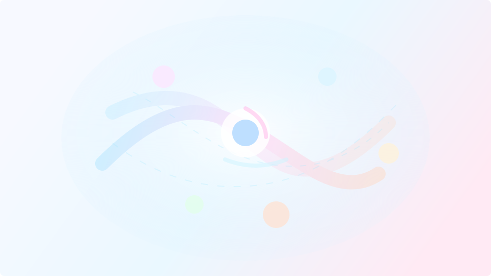

$ cat quantum-acceleration.md

Quantum Acceleration: Tap Source Energy and Move Forward Every Day
“Stagnation is just a state of mind. One small step restarts momentum.”
Reading time: ~ 5 min
Contents
Why this approach works
- The brain strengthens what it repeats (neuroplasticity).
- Emotion is energy in motion; feeling it frees power for action.
- Reframing from “against me” to “for me” changes the body’s response.
Science at a glance
- If–then plans: strong aid to goal attainment (Gollwitzer & Sheeran, 2006).
- Habits: median automaticity ≈ 66 days (Lally et al., 2010).
- Reappraisal > suppression for emotion regulation (Gross, 2002).
- Gratitude interventions: small but significant gains (2023/2024 meta-analyses).
- Cyclic sighing breath: mood/arousal benefits vs meditation (Balban et al., 2023).
Core principle: tapping source‑energy
Assume there’s no absolute good or bad: only information. Behind each difficulty lies neutral energy you can orient. Welcome it, then convert it into right movement.
Priming breath (5 min)
Use cyclic sighing: inhale – mini top‑off inhale – long mouth exhale. Repeat for 5 minutes.
Guided protocol (10 min)
- Name a recent uncomfortable situation.
- Breathe 60 seconds; allow emotions.
- List 3–5 positive consequences already emerged.
- Read aloud; let gratitude arise.
- Reframe: “This is helping me to…”
- Turn your micro‑action into an if–then plan and execute it today.
- Work: If coffee ends at 8 a.m., then write 3 lines.
- Health: If laptop closes at 6 p.m., then 10‑minute walk.
- Relationships: If tension rises, then 3 cyclic sighs + one listening question.
Common mistakes
- Chasing perfection instead of taking the smallest step.
- Numbing emotion.
- “Positive thinking” without feeling.
66 days: what to expect
Median ≈ 66 days; range 18–254. Treat it as a compass, not a deadline.
Sources & resources
- Implementation intentions (if–then plans): Gollwitzer & Sheeran, 2006 (Meta‑analysis)
- Habit automaticity over time (median ≈ 66 days): Lally et al., 2010 (EJSP)
- Cognitive reappraisal vs suppression: Gross, 2002 (Psychophysiology)
- Cyclic sighing breath, mood/arousal: Balban et al., 2023 (PubMed) • Open‑access PMC
- Gratitude interventions: 2023 meta‑analysis • 2024 meta‑analysis
- Videos (demos): YouTube: 5‑min guided • Quantal explainer
$ contact --info
admin@tommysuzanne.com ~$
▮